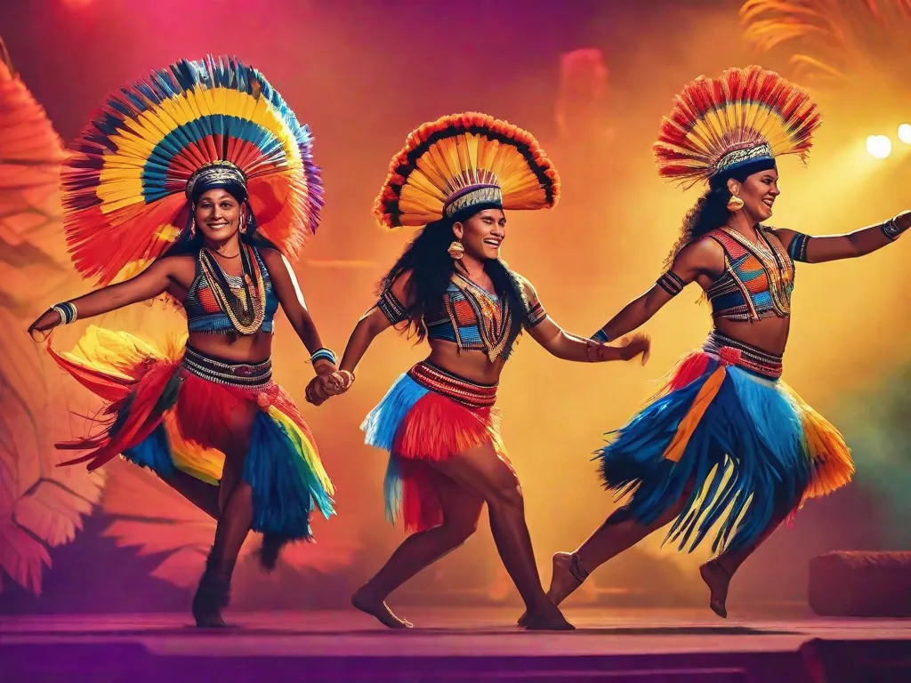
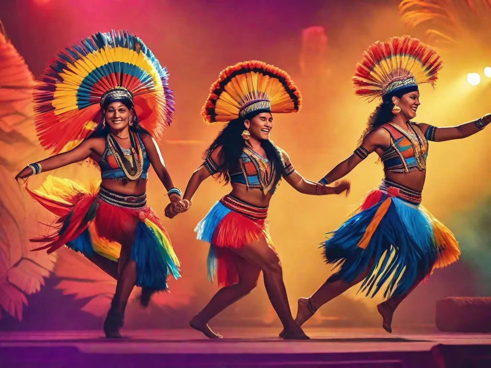
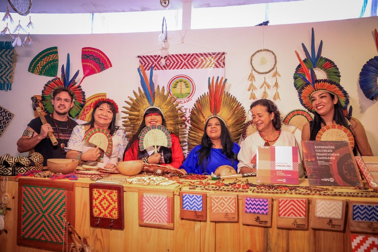

O Festival Brasil É Terra Indígena começa nesta semana em Brasília, com entrada franca.
O evento tem como objetivo mostrar a diversidade de pensamento e estética dos povos indígenas no Brasil.
A Feira de Arte dos Povos Indígenas contará com a participação de cerca de 80 artistas de diferentes etnias.
A feira retrata a diversidade das belezas artísticas e saberes de convivência relacionados aos biomas brasileiros.
O festival também terá debates e rodas de conversa sobre temas como comunicação indígena, economia ancestral e crise climática.
A programação musical contará com artistas indígenas renomados e convidados como Lenine, Gaby Amarantos e Felipe Cordeiro.
O festival é organizado pela rede Mídia Indígena e conta com patrocínio do Instituto Cultural Vale e apoio dos ministérios da Cultura e dos Povos Indígenas.

O Festival Brasil É Terra Indígena começa nesta semana em Brasília, com entrada franca.
O evento tem como objetivo mostrar a diversidade de pensamento e estética dos povos indígenas no Brasil.
A Feira de Arte dos Povos Indígenas contará com a participação de cerca de 80 artistas de diferentes etnias.
A feira retrata a diversidade das belezas artísticas e saberes de convivência relacionados aos biomas brasileiros.
O festival também terá debates e rodas de conversa sobre temas como comunicação indígena, economia ancestral e crise climática.
A programação musical contará com artistas indígenas renomados e convidados como Lenine, Gaby Amarantos e Felipe Cordeiro.
O festival é organizado pela rede Mídia Indígena e conta com patrocínio do Instituto Cultural Vale e apoio dos ministérios da Cultura e dos Povos Indígenas.

Os festivais de cultura indígena no Brasil representam uma importante oportunidade para valorizar e preservar a arte e tradição dos povos originários. Além de promover o intercâmbio cultural, esses eventos contribuem para a conscientização sobre a diversidade étnica e cultural do país. É fundamental reconhecer e respeitar a importância desses festivais como espaços de valorização da ancestralidade indígena, fortalecendo a identidade e promovendo a inclusão dessas comunidades na sociedade brasileira.
Uma oportunidade de conhecer a riqueza cultural dos povos indígenas do país:
O Festival Brasil É Terra Indígena, que acontecerá em Brasília a partir desta semana, é uma iniciativa que busca valorizar e celebrar a cultura indígena presente no território brasileiro. Com entrada franca, o evento proporciona uma oportunidade única para o público conhecer de perto a diversidade de pensamento e estética dos mais de 300 povos indígenas que habitam o país.
Feira de Arte dos Povos Indígenas:
Uma das principais atrações do festival é a Feira de Arte dos Povos Indígenas, que contará com a participação de cerca de 80 artistas provenientes dos seis biomas do território brasileiro. A feira estará aberta nos dois dias do evento, funcionando das 9h às 20h, e terá a presença de diferentes etnias, como Yanomami, Macuxi, Terena, Baré, Ashaninka, Kadiwéu, Guarani, Guajajara, Tremembé, Wauja e Mehinaku. O objetivo dessa feira é retratar a diversidade das belezas artísticas ligadas à ancestralidade indígena e apresentar os saberes de convivência e proteção relacionados aos diferentes biomas presentes no país. É uma oportunidade única para apreciar e adquirir peças únicas e autênticas produzidas pelos artistas indígenas.
